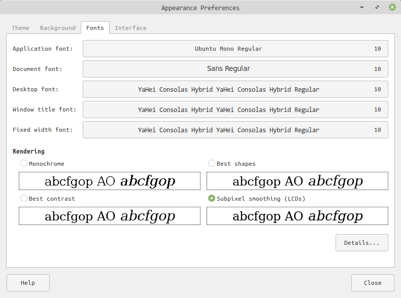
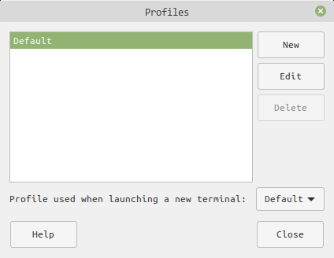
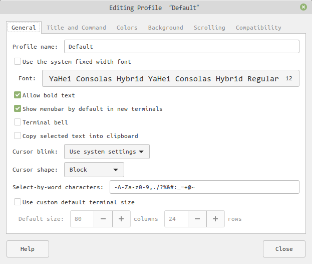

由于刚刚安装的Linux mint终端中的中文字体显示为楷体，但是这个楷体在终端中显示有些问题：字与字之间空隙很大。所以就打算换一款字体。
1 | 字体介绍及下载
关于Yahei Consolas Hybrid这个字体我是从怎样修改终端字体这篇文章中发现的。关于这款字体linux公社有一篇文章[^1]，其中有这样一段描述:
Consolas雅黑混合字体是什么？？Consolas是一种专门为编程人员设计的字体,这一字体的特性是所有字母、数字与符号均能非常容易辨认！而且所有字符都具有相同的宽度，让编程人员看着更舒服，当然在打个人和商业信函的时候，用这个字体也是不错的选择，这一字体还专门为ClearType做了优化，可以让它更舒适地展示在屏幕上。
这款字体的下载链接在这里[^2]。
2 | 字体的安装
将YaHei.Consolas.1.11b.rar解压，得到YaHei.Consolas.1.11b.ttf。
之后在linux mint 系统字体文件夹中建立对应的字体文件夹
1 | sudo mkdir /usr/share/fonts/vista |
复制字体文件到对应的文件夹下
1 | sudo cp YaHei.Consolas.1.11b.ttf /usr/share/fonts/vista |
更改字体文件权限
1 | sudo chmod 644 /usr/share/fonts/vista/YaHei.Consolas.1.11b.ttf |
刷新并安装字体
1 | sudo mkfontscale && sudo mkfontdir && sudo fc-cache -fv |
3 | 安装之后设置字体
在mint的左下角Menu中搜索appearance，打开。如下边这个界面

在这里面可以设置应用字体，文档字体，桌面字体，窗口标题字体等等。
下面设置终端字体
打开终端，在终端左上角Edit -> Profiles，打开

点击右边的
Edit, 就可以在General界面下的font进行选择字体了，在其中选择我们之前已经安装好了的Yahei Consolas Hybrid字体即可。

全部参考文档
[1] 怎样修改终端字体
[2] Consolas雅黑混合版yahei consolas hybrid编程字体下载
[3] 下载yahei consolas hybrid字体
[4] Linux下设置雅黑-Consolas混合字体
[5] ubuntu安装微软雅黑和Consolas字体
[^1]: Consolas雅黑混合版yahei consolas hybrid编程字体下载
[^2]: 下载yahei consolas hybrid字体